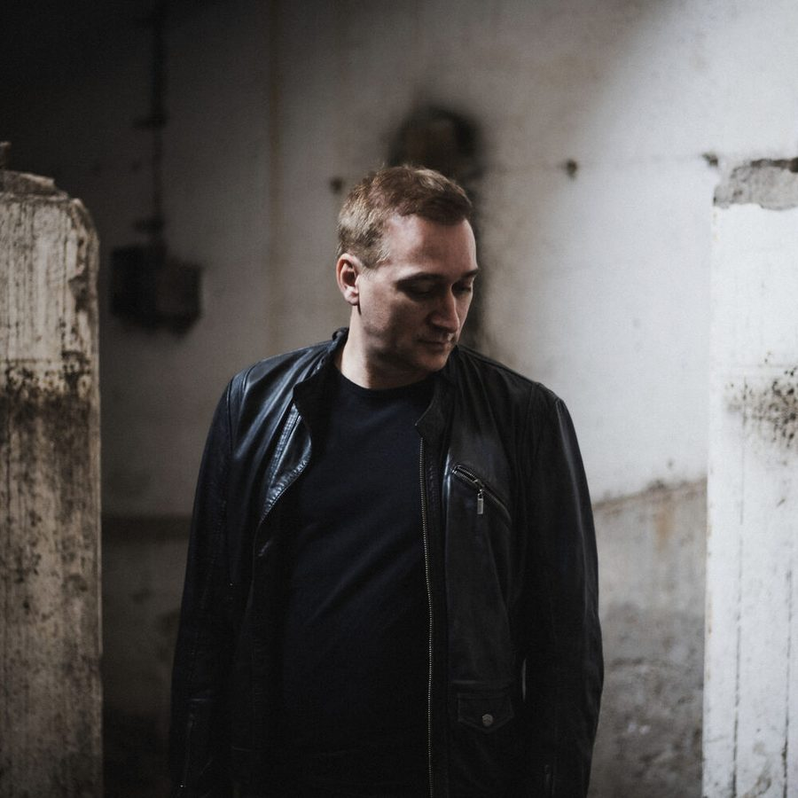

Paul van Dyk [Audio]: The politics of PVD


STREAMING AUDIO INTERVIEW
He’s one of the most sought after and loved DJ/producers the world has ever seen, and in ‘07 he solidified this status with his amazing new artist album In Between and a groundbreaking new approach to the technology he uses in his DJ sets. But for Paul van Dyk, it’s not just about the tunes: there’s a heavy dose of politics in the dynamic and varied approach that he brings to the trance sound.
The recipient of Berlin’s prestigious ‘Medal of Honour’ award and responsible for overseeing several charities, when it comes to politics he’s about as outspoken as anyone else in dance music. As he prepares to return to Australia for his second round of gigs this year, this time headlining several massive parties across the country, ITM’s Angus Paterson talks to Paul about his involvement with politics both home and abroad, the controversy over the DJ Mag 100 results and on the eve of our Federal Election last month, what he really thinks of outgoing PM John Howard…
Catch Paul van Dyk driving it home at the following gigs across the country…
Thu 6th Dec – Gold Coast, Platinum
Fri 7th Dec – Perth, Metro City
Sat 8th Dec – Sydney, Transmission
Sat 8th Dec – Ballarat, Ultraworld
Sun 9th Dec – Adelaide, Shores Complex
And check out this clip of PVD launching In Between in Berlin earlier this year, with a bit of help from that other mainplayer in dance music Carl Cox!